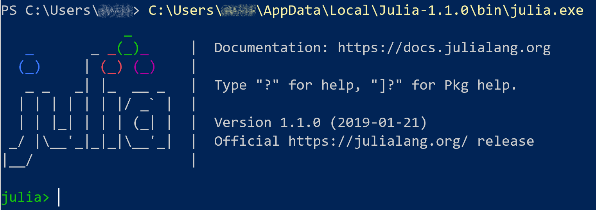

Welcome to the Julia language project! We’re excited that you’re interested in learning Julia and contributing to our project and community. Julia is a new programming language. It is also a general purpose language, which means that you can find a way to build basically any software in it that you could with another language. However, no programming language is the best tool for every problem. Julia was designed with technical and scientific users in mind. These users often have very large data sets or very complex mathematical problems that they want to solve. This means they want to write code that can run on a computer very quickly, so that they don’t have to wait days or even weeks to get a result. Most of the programming languages that run very fast are also quite a bit trickier to use than some “high level” languages that you might have heard of, like Python or Matlab. For example, C and Fortran are known to be very fast, but they require that the user provides a lot of information to the computer about the program they are writing as they write it. This takes more time and often more programming experience than working in a language like Python. People used to think that you had to choose between a programming language that did your calculations quickly and one that took less effort to code in. Computer science is still a rapidly evolving field, however, and luckily the creators of modern programming languages are able to learn from all the programming languages of earlier decades. Julia was designed to give you everything – to be relatively easy and quick to write programs in, but also to run code and perform calculations very quickly.
The first thing to do is download Julia. Pre-built versions are available from our website. Download the version for your operating system. If you are on Linux, we would still recommend downloading the “Generic Linux Binaries” from our website. If you have more experience working with Linux or with programming generally, another option on a Linux machine is to download Julia using your system package manager, like yup, apt-get etc. A system package manager is a tool that keeps track of all your downloads and helps make sure they don’t conflict with one another.
Once you download Julia, and run the installer (Windows/Mac – on linux you just unzip the downloaded file), you will get a julia binary in the bin directory where your install lives. Running that program will leave you in a textual prompt, which is usually called a REPL - Read-Eval-Print-Loop.

You can develop your Julia programs by typing directly in the REPL. Note that the history of everything you type in the REPL is stored, even across restarts. You can access this history using the up-arrow key, or by using ctrl-r for searching.
Even though you can always scroll up to see code you’ve already written in a REPL, this is not a good way to review or save past work once you start writing longer programs. If you want a more graphical environment that also saves your programs, you can use Julia from within your favorite text editor: Visual Studio Code, Vim, Emacs, IntelliJ IDEA. Minimally, a text editor like Vim or Notepad will allow you to create a document where you can write programs but without automatically adding a bunch of formatting information. (Microsoft Word and Apple Pages store a lot more information about your document than just the text you’ve written, and this is bad for writing programs.) To make coding easier, there are lots of “integrated development environments” (IDEs) out there that offer more than a simple text editor. These IDEs will allow you not only to write and store programs you’ve written, but also to run them, making it easier to test and experiment as you write. If you don’t yet have a favorite editor or IDE, we would suggest using the Atom code editor, along with Julia plugin for Atom, called Juno. Use the instructions here to install Atom and Juno. Juno lets you edit and run Julia code within a single environment.
When you downloaded Julia using the instructions above, you got the compiler (which converts the Julia code you write into a version your computer can run), and the standard library (also sometimes called Base), which contains basic functionality that comes built in. This includes things like arrays and lists, numbers and strings, some basic linear algebra and statistics etc. For most use cases, you will likely need to download and run external libraries, which are known as packages in Julia. A list of publicly available packages is available here
Packages are downloaded using a package manager built into the Julia standard library. You can interact with the package manager in a couple of ways. The simplest is to press ] (the right square bracket) on your keyboard when you are at the REPL, which will put the REPL into pkg mode. In this mode, you type package management commands directly into the REPL. For example, add PackageName will add a package to your local environment, and rm PackageName will remove it. Using the package manager will also typically manage the package’s dependencies for you; this means the package manager makes sure your computer/environment has everything it needs in order to run the package you want to install. A video showing how to use the package manager in more detail can be seen on our youtube channel.
If you have experience programming in another language, you will find that most of your knowledge will be easily transferred to Julia. We have documented some noteworthy differences from other popular languages: Matlab, R, Python and C/C++
It is easy to move from using Julia packages to developing them. Most of our contributors started that way. If you are the user of a Julia package, please believe that you have the skills to contribute bug fixes and new features. Chris Rackaukas has created a video that walks you through the process of creating a new package, or contributing code to an existing package. Find it here on our Youtube channel
This conversation was marked as resolved by aviks Show conversation
Programming is fun and exciting. The Julia programming language is no exception. While it is always best to try to answer a question yourself if you can, feel free to ask someone else more experienced! Take a look at the Julia Community tab on the website to find all the places you can connect and get help in the Julia Community.